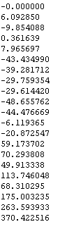

最小
最大
平均値
標準偏差
標準誤差
-65.0178
94.4699
4.85274
20.4635
0.255794
| オプション | 必須項目/選択項目 | 説明 | デフォルト |
|---|---|---|---|
| -i | 必須 | 入力ファイル設定 | NULL |
| -o | 選択 | 出力ファイル設定 | NULL |
| -O | 選択 | 出力ファイル設定 | NULL |
| -centre | 選択 | ピクセルの位置を設定 | Cx=0.0 Cy=0.0 |
| -Avg | 選択 | 平均の度合を出力する | |
| -Inv | 選択 | 逆の度合を出力する | |
| -h | 選択 | ヘルプを表示 |
|
最小 |
-65.0178 |
| 画面に表示されるデータ | -oの出力ファイルのデータ | -Oの出力ファイルのデータ |
| 画面に表示されるデータ | -oの出力ファイルのデータ |
|  |
| 画面に表示されるデータ | -oの出力ファイルのデータ |
| 画面に表示されるデータ | -oの出力ファイルのデータ |